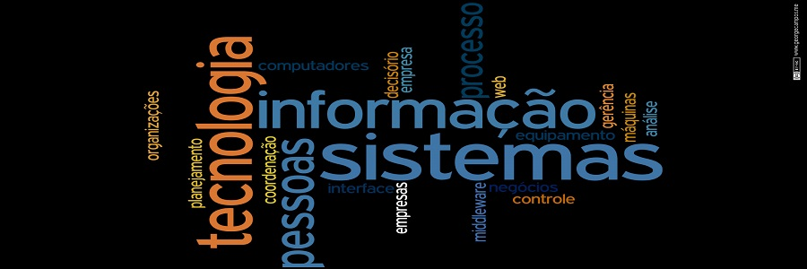

Página de T.I.


Informações Sobre T.I
J.V. Informática
O que é Tecnologia da Informação (TI):
No início, os computadores eram tidos apenas como "máquinas gigantes" que tornavam possível a automatização de determinadas tarefas em instituições de ensino/pesquisa, grandes empresas e nos meios governamentais. Com o avanço tecnológico, tais máquinas começaram a perder espaço para equipamentos cada vez menores, mais poderosos e mais confiáveis. Como se não bastasse, a evolução das telecomunicações permitiu que, aos poucos, os computadores passassem a se comunicar, mesmo estando em lugares muito distantes geograficamente. Mas perceba que, desde as máquinas mais remotas e modestas até os computadores mais recentes e avançados, o trabalho com a informação sempre foi o centro de tudo. É por isso que a expressão Tecnologia da Informação (TI) é tão popular. Mas o que vem a ser isso?
Tecnologia da Informação:
A Tecnologia da Informação (TI) pode ser definida como o conjunto de todas as atividades e soluções providas por recursos computacionais que visam permitir a obtenção, o armazenamento, o acesso, o gerenciamento e o uso das informações. Na verdade, as aplicações para TI são tantas - estão ligadas às mais diversas áreas - que há várias definições para a expressão e nenhuma delas consegue determiná-la por completo. Sendo a informação um patrimônio, um bem que agrega valor e dá sentido às atividades que a utilizam, é necessário fazer uso de recursos de TI de maneira apropriada, ou seja, é preciso utilizar ferramentas, sistemas ou outros meios que façam das informações um diferencial. Além disso, é importante buscar soluções que tragam resultados realmente relevantes, isto é, que permitam transformar as informações em algo com valor maior, sem deixar de considerar o aspecto do menor custo possível.